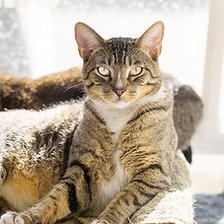

<html>
<title>AR Image Tracking</title>
<!-- <script src="https://cdn.jsdelivr.net/gh/aframevr/aframe@1c2407b26c61958baa93967b5412487cd94b290b/dist/aframe-master.min.js"></script>
<script src="https://raw.githack.com/AR-js-org/AR.js/master/aframe/build/aframe-ar-nft.js"></script> -->
<script src="https://cdn.jsdelivr.net/npm/@tensorflow/tfjs"> </script>
<script src="https://cdn.jsdelivr.net/npm/@tensorflow-models/coco-ssd"> </script>

<head>  
</head>

<body ng-app="myApp">
   <div>
      <div ng-controller="myCtrl">
            <!--  -->
            <!-- <div id="threejsContainer">
                <video id="object-video" style="display: none"></video>
            </div> -->
            <video id="object-video" style="display: none"></video>
            <video id="overlayVdo" src="green.webm" style="display: none" loop></video>
            <canvas id="object-detect" ></canvas>
         <!-- <a-scene vr-mode-ui="enabled: false;" renderer="logarithmicDepthBuffer: true;" embedded
            arjs="trackingMethod: best; sourceType: webcam;debugUIEnabled: false;">
            <a-nft type="nft" url="https://arjs-cors-proxy.herokuapp.com/https://raw.githack.com/AR-js-org/AR.js/master/aframe/examples/image-tracking/nft/trex/trex-image/trex" smooth="true" smoothCount="10"
               smoothTolerance=".01" smoothThreshold="5">
               <a-entity gltf-model="https://arjs-cors-proxy.herokuapp.com/https://raw.githack.com/AR-js-org/AR.js/master/aframe/examples/image-tracking/nft/trex/scene.gltf" scale="5 5 5" position="50 150 0">
               </a-entity>
            </a-nft>
            <a-entity camera></a-entity>
         </a-scene> -->
      </div>
   </div>
</body>
<script src="https://ajax.googleapis.com/ajax/libs/angularjs/1.6.9/angular.min.js"></script>
<script src="https://cdnjs.cloudflare.com/ajax/libs/three.js/r125/three.min.js"></script>
<script src="index.js"></script>

</html>


